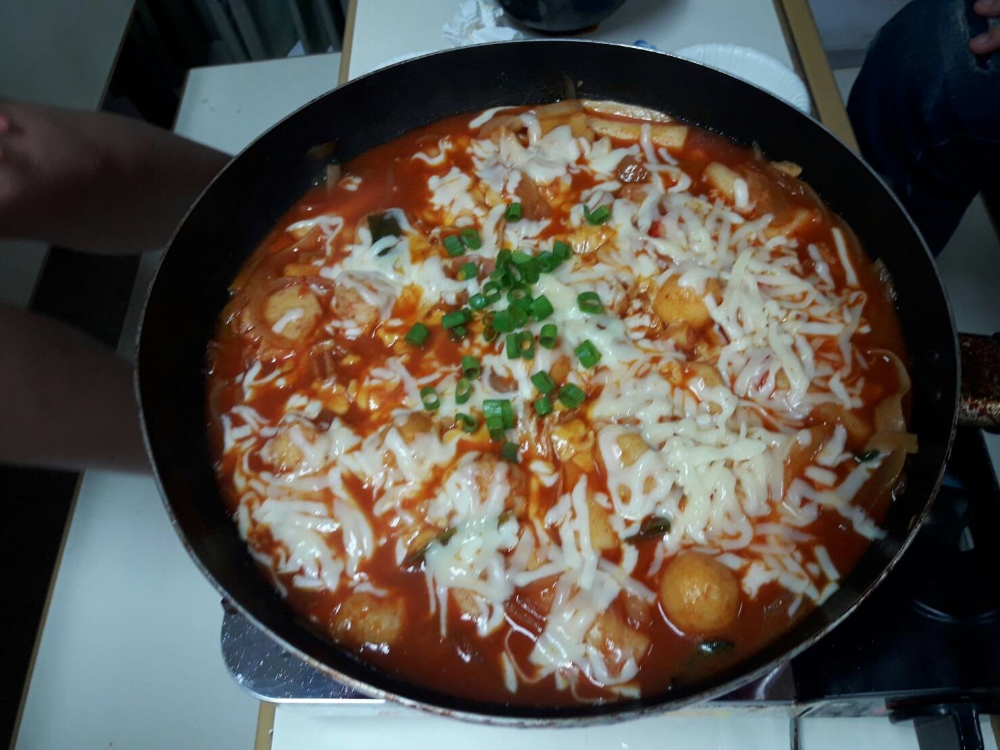

韓式辣炒年糕
食材:
1.主要食材:韓國年糕條+洋蔥+高湯+青蔥+火鍋料
2.調味醬料:韓國辣椒醬+醬油+蜂蜜+蒜末+糖
STEP:
- 先煮高湯：高湯材料放入後煮到大滾. 關小火滾約15分鐘. 關火渣濾掉備用
- 醬：韓國辣椒醬3湯匙+韓國辣椒粉1湯匙+醬油1湯匙+蜂蜜1湯匙+糖1湯匙+大蒜1湯匙
- 在平底鍋中加入洋蔥根蔥爆香
- 爆香完後加入剛剛煮好的一碗高湯(高湯也可以先煮好放冰箱備用)
- 將醬稍微混合
- 高湯煮滾後將醬加入平底鍋
- 中火滾約5分鐘
- 加入年糕跟魚板繼續中火滾約15分鐘 到年糕變軟(但還是有一點Q度)跟收汁變濃稠(如果醬很快就收汁但年糕還沒軟可以加入少許水繼續煮到年糕好了為止)
花絮照片
